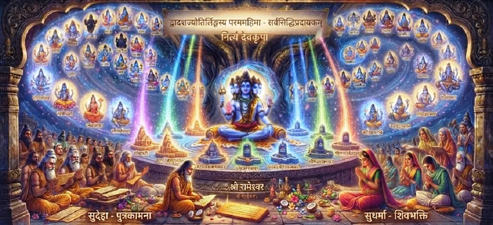

The Final Glory of Lord Shiva and the Jyotirlingas
The forty-third and final chapter of the Kotirudra Samhita grandly concludes the sacred text by summarizing the supreme majesty of Lord Shiva, the radiant power of the twelve Jyotirlingas, and the ultimate fruit of spiritual devotion.
This chapter stands as a monumental tribute to the limitless light and grace of Mahadeva.
Chapter 43 Highlights
Supreme Majesty
The boundless sovereign glory of Lord Shiva.
Radiant Jyotirlingas
The eternal pillars of light anchoring divine grace.
Cosmic Light
The unmanifest reality manifesting as sacred form.
Ultimate Liberation
Freedom attained through remembrance of the linga.
Karmic Dissolution
Cleansing all sins by meditating on Shiva's light.
Grand Conclusion
The glorious wrap-up of the Kotirudra Samhita.
Core Topics in This Chapter
- 01The Supreme Majesty of Lord Shiva→
- 02The Transcendent Power of the Jyotirlingas→
- 03The Manifestation of Infinite Light→
- 04The Great Merit of Sacred Pilgrimage→
- 05The Cleansing of All Sins and Karma→
- 06The Foundation of Eternal Devotion→
- 07Uniting the Individual Soul with the Supreme→
- 08Perpetual Blessings to All Humanity→
- 09Summary and Legacy of Kotirudra Samhita→
- 10Transition to Uma Samhita Overview→
The Supreme Majesty of Lord Shiva
This section reiterates that Lord Shiva is the ultimate cause, sustainer, and dissolver of the universe, transcending all limitations of time, space, and form.
His glory is beyond the grasp of ordinary intellect.
The Transcendent Power of the Jyotirlingas
The twelve Jyotirlingas are celebrated as focal points of cosmic energy, installed across sacred sites to grant spiritual awakening and liberation to all who seek them.
Each linga radiates boundless divine power.
The Manifestation of Infinite Light
The text highlights how the formless Supreme Consciousness chose to manifest as beams of infinite light (jyotis) out of compassion for the material world.
This light illuminates the inner darkness of seekers.
The Great Merit of Sacred Pilgrimage
Visiting, seeing, or even remembering the holy shrines of the Jyotirlingas washes away the impurities of countless lifetimes and grants supreme spiritual merit.
Pilgrimage acts as a direct pathway to divine grace.
The Cleansing of All Sins and Karma
Through the concluding verses, it is affirmed that anyone who takes refuge in Lord Shiva and honors the Jyotirlingas is completely freed from karmic bondage.
No sin is too great to be dissolved by Shiva's mercy.
The Foundation of Eternal Devotion
The chapter emphasizes that true devotion (bhakti) is the ultimate anchor of human existence, turning mortal life into a sacred pilgrimage toward liberation.
Bhakti transforms the ordinary mind into a temple of peace.
Uniting the Individual Soul with the Supreme
The ultimate goal of all teachings in the Kotirudra Samhita is realized here: the complete merger of the individual consciousness (jiva) with the Supreme Reality (Shiva).
Duality dissolves into absolute oneness.
Perpetual Blessings to All Humanity
The text concludes with a shower of divine blessings upon all readers and listeners, promising health, peace, spiritual growth, and eternal grace.
These blessings extend across generations to all sincere souls.
Summary and Legacy of Kotirudra Samhita
As the final chapter, it seals the legacy of the Kotirudra Samhita as a supreme manual for understanding Lord Shiva, the Jyotirlingas, and the path of liberation.
Its teachings remain a eternal beacon for spiritual seekers.
Transition to Uma Samhita Overview
With the glorious completion of the Kotirudra Samhita, the narrative seamlessly prepares the reader to embark upon the sacred journey of the Uma Samhita.
Readers are invited to continue to the Uma Samhita Overview.
Key Teachings of Chapter 43
Supreme Glory
The unmatched sovereignty of Mahadeva.
Sacred Jyotirlingas
Beacons of divine light across the earth.
Infinite Light
The unmanifest reality shining forth.
Pilgrimage Merit
Washing away karma through sacred visits.
Total Redemption
Absolute freedom from all past sins.
Eternal Legacy
Concluding the majestic Kotirudra Samhita.
Spiritual Reflection
Chapter 43 brings a breathtaking and majestic conclusion to the Kotirudra Samhita. By celebrating the final glory of Lord Shiva and the transcendent light of the twelve Jyotirlingas, this chapter anchors our spiritual understanding in the infinite reality of Mahadeva. It reminds us that every prayer, every act of worship, and every pilgrimage leads us closer to the supreme source of all existence. As we complete this profound samhita, may the radiant light of the Jyotirlingas forever illuminate our hearts, guiding us with peace, devotion, and ultimate liberation.
Living the Message of Chapter 43
Keep the radiant image of the Jyotirlingas in your mind as an eternal anchor for meditation and inner peace.
Honor Lord Shiva in all beings, recognizing that the supreme light resides within every soul.
Conclude your study of this samhita with deep gratitude, carrying its teachings forward into your daily spiritual practice.
Key Spiritual Concepts
The radiant pillar of infinite light representing Lord Shiva.
The absolute rule and power of the Divine over the cosmos.
The unmanifest spiritual energy illuminating all existence.
The spiritual merit gained by visiting sacred shrines.
The total burning away of past sins through divine sight.
The ultimate attainment of peace and oneness in Shiva.
Chapter Summary
Kotirudra Samhita Chapter 43 grandly concludes the sacred text by celebrating the final glory of Lord Shiva and the transcendent power of the twelve Jyotirlingas. It summarizes the supreme majesty of the divine light, the merits of pilgrimage, the eradication of karma, and the ultimate unification of the soul with Shiva, gracefully preparing the reader to transition into the Uma Samhita Overview.
Frequently Asked Questions
1. What is the primary theme of Kotirudra Samhita Chapter 43?
Chapter 43 presents the grand finale of the Kotirudra Samhita, summarizing the supreme glory of Lord Shiva and the transcendent power of the holy Jyotirlingas.
2. How does this chapter follow the previous one?
Following the eternal rewards of bhakti in Chapter 42, this final chapter wraps up the entire samhita by uniting all teachings around the supreme majesty of Lord Shiva's light.
3. What is the significance of the Jyotirlingas emphasized here?
The Jyotirlingas are highlighted as radiant pillars of infinite light that liberate humanity and anchor divine grace across the earth.
4. What section or samhita follows next?
The next section is the Uma Samhita Overview.
“Lord Shiva, manifest as the radiant Jyotirlingas, is the supreme light of the universe that guides every seeker from darkness to eternal liberation.”
Continue Through Shiva Purana
Chapter 43 concludes the Kotirudra Samhita. Continue to the Uma Samhita Overview.